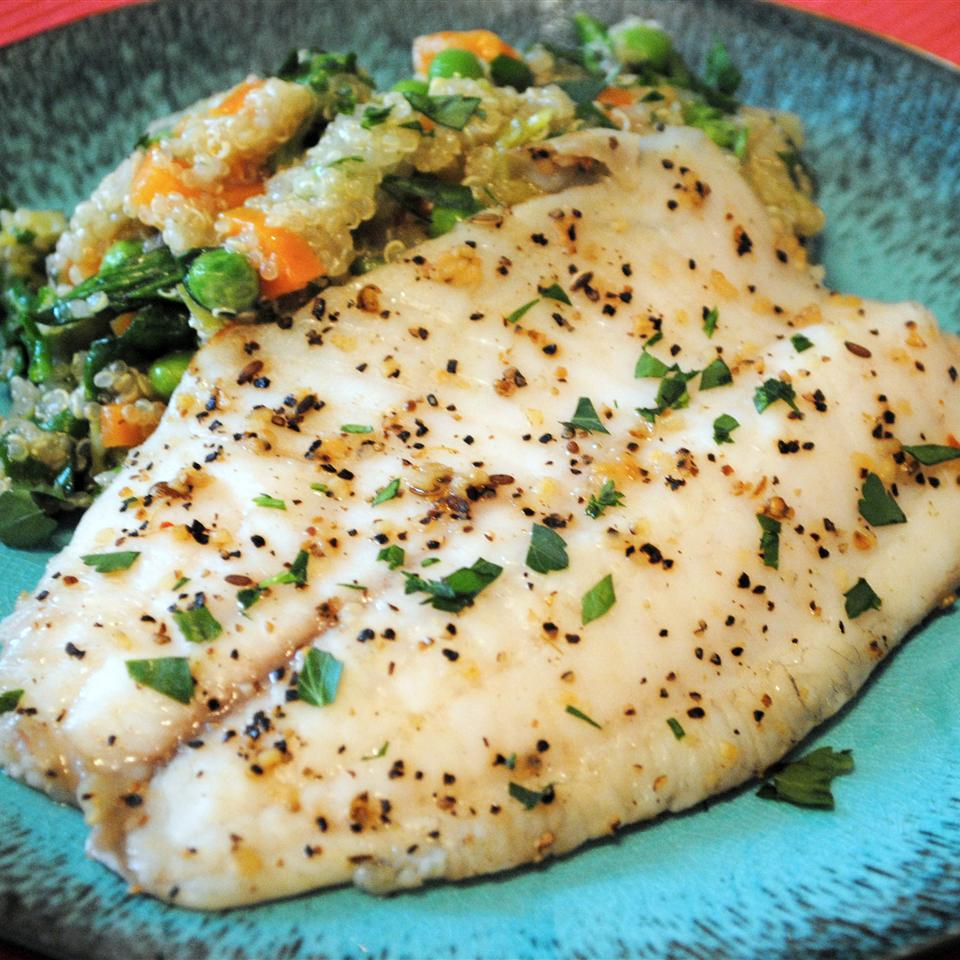

Baked Tilapia

Description
This easy recipe for tilapia only takes a few minutes to prepare, uses few ingredients, and is flavorful.
Ingredients
- 4 (4 ounce) fillets tilapia
- 2 teaspoons butter
- 1/4 teaspoon Old Bay Seasoning TM, or to taste
- 1/2 teaspoon garlic salt, or to taste
- 1 lemon, sliced
- 1 (16 ounce) package frozen cauliflower with brocoli and red pepper